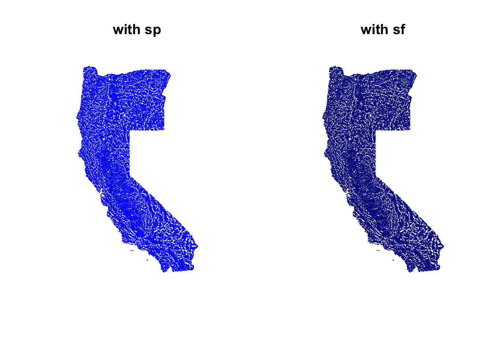
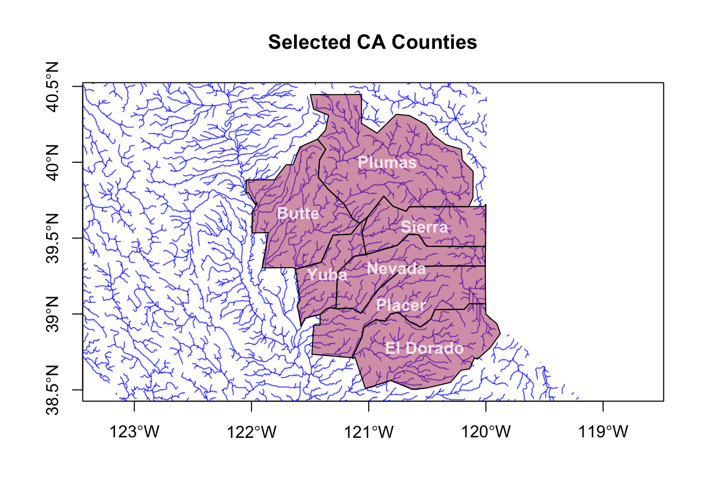
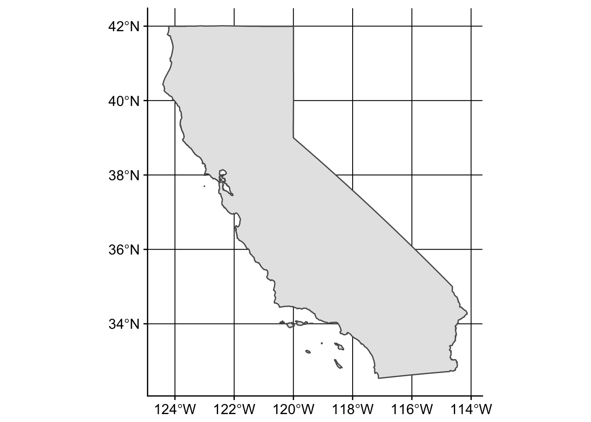

Line and Polygon Data with rgdal and sf
There are loads of spatial mapping/plotting packages in R. The main two ways to read in spatial data use the rgdal package, and the sf package. Let’s look at how to load/plot line and polygon data.
Let’s load packages first:
suppressPackageStartupMessages({
library(rgdal); # spatial/shp reading
library(dplyr); # wrangling data/plotting
library(readr);
library(viridis); # nice color palette
library(sf); # newer "simple features" spatial package
library(USAboundaries); # state/county data
library(Imap); # nice mapping/color functions
library(ggrepel) # for labeling
}) Line/Polyline Shapefile Data
For this example, let’s use some Hydroshed Data.
I’ve downloaded rivers for CA and OR and put them here on github. Download the zipped file and unzip it in a data folder. We’re going to use shapefiles for the remainder of this example.
Load shapefiles with rgdal
Let’s load a polyline or line shapefile of rivers of California and Oregon. The result is a SpatialLinesDataFrame in your R environment.
# we can use ogrInfo to see CRS, attributes, etc.
ogrInfo(dsn="./data", layer="rivs_CA_OR_hydroshed") # see shapefile info## Source: "./data", layer: "rivs_CA_OR_hydroshed"
## Driver: ESRI Shapefile; number of rows: 21976
## Feature type: wkbLineString with 2 dimensions
## Extent: (-124.5429 32.58542) - (-114.1315 46.26042)
## CRS: +proj=longlat +datum=WGS84 +no_defs
## LDID: 87
## Number of fields: 26
## name type length typeName
## 1 ARCID 0 9 Integer
## 2 UP_CELLS 2 24 Real
## 3 statefp 4 80 String
## 4 statens 4 80 String
## 5 affgeoid 4 80 String
## 6 geoid 4 80 String
## 7 stusps 4 80 String
## 8 name 4 80 String
## 9 lsad 4 80 String
## 10 aland 2 24 Real
## 11 awater 2 24 Real
## 12 state_name 4 80 String
## 13 state_abbr 4 80 String
## 14 jurisdicti 4 80 String
## 15 statefp.1 4 80 String
## 16 statens.1 4 80 String
## 17 affgeoid.1 4 80 String
## 18 geoid.1 4 80 String
## 19 stusps.1 4 80 String
## 20 name.1 4 80 String
## 21 lsad.1 4 80 String
## 22 aland.1 2 24 Real
## 23 awater.1 2 24 Real
## 24 state_na_1 4 80 String
## 25 state_ab_1 4 80 String
## 26 jurisdic_1 4 80 String# then read in the shapefile
rivers_sp<- readOGR(dsn = "data", layer = "rivs_CA_OR_hydroshed")## OGR data source with driver: ESRI Shapefile
## Source: "data", layer: "rivs_CA_OR_hydroshed"
## with 21976 features
## It has 26 fieldsproj4string(rivers_sp) # check projection, should be WGS84## [1] "+proj=longlat +datum=WGS84 +no_defs +ellps=WGS84 +towgs84=0,0,0"Load shapefiles with sf
Here’s how to do the same thing using the sf package. Notice two important differences, the sf package reads things in as a regular dataframe, with the spatial component of the data contained inside a geometry list-column within the dataframe. That means you can operate on this data as you would any data frame. The other main difference, is that reading shape data in is much faster with sf.
# notice the similar function structure, but results in dataframe
rivers_sf <- st_read(dsn = "./data", layer="rivs_CA_OR_hydroshed") ## Reading layer `rivs_CA_OR_hydroshed' from data source `/Users/ryanpeek/Documents/github/teaching/mapping_in_R/data' using driver `ESRI Shapefile'
## Simple feature collection with 21976 features and 26 fields
## geometry type: MULTILINESTRING
## dimension: XY
## bbox: xmin: -124.5429 ymin: 32.58542 xmax: -114.1315 ymax: 46.26042
## epsg (SRID): 4326
## proj4string: +proj=longlat +datum=WGS84 +no_defs# check crs
st_crs(rivers_sf)## Coordinate Reference System:
## EPSG: 4326
## proj4string: "+proj=longlat +datum=WGS84 +no_defs"Polygon Shapefile Data
No different here, process is the same. But let’s take a look at a package that might be helpful for folks working with state/county boundaries.
Download State/County Data
A nice package for pulling county/state data is the USAboundaries package. Importantly, this package pulls these data in as sf features (dataframes), not as rgdal or SpatialPolygonDataFrames data.
Let’s show this in two steps, the first is how to grab a sf feature for a given state or states.
# Pick a State
state_names <- c("california")
# Download STATE data and add projection
CA<-us_states(resolution = "high", states = state_names) %>%
st_transform(crs = 4326)That was easy…what about counties? We can use the same type of call, but let’s add some dplyr and purrr functionality here to add the X and Y values for the centroid of each polygon (county) we download. In this case we use map_dbl because it will take a vector or values (the geometry col here), map a function over each row in that vector, and return a vector of values (the centroid points).
library(purrr)##
## Attaching package: 'purrr'## The following object is masked from 'package:Imap':
##
## imap# Pick some CA counties
co_names <- c("Butte", "Placer", "El Dorado", "Nevada", "Yuba", "Sierra", "Plumas")
# get COUNTY data for a given state
counties_spec <- us_counties(resolution = "low", states=state_names) %>% # use list of state(s) here
filter(name %in% co_names) %>% # filter to just the counties we want
mutate(lon=map_dbl(geometry, ~st_centroid(.x)[[1]]), # add centroid values for labels
lat=map_dbl(geometry, ~st_centroid(.x)[[2]])) # add centroid values for labels
# get range of lat/longs from counties for mapping
mapRange1 <- c(range(st_coordinates(counties_spec)[,1]),range(st_coordinates(counties_spec)[,2]))Make some Maps!
First let’s show a few examples comparing how to plot with the rgdal rivers dataset vs. the sf version.
Base: rgdal vs. sf
par(mfrow=c(1,2))
plot(rivers_sp, col="blue")
title("with sp")
plot(st_geometry(rivers_sf), col="darkblue")
title("with sf")
Pretty much the same deal.
Advanced Mapping
Okay, let’s add in the county/state data, and figure out a few tricks to making our map a bit cleaner.
Layering Maps: plot and sf
par(mfrow=c(1,1)) # reset to default
plot(st_geometry(counties_spec), col=adjustcolor("maroon", alpha=0.5), cex=1.5)
plot(st_geometry(rivers_sf), col=adjustcolor("blue", alpha=0.7), add=T)
text(counties_spec$lon, counties_spec$lat, labels = counties_spec$name)
graphics::title("Selected CA Counties")
Unforunately this map isn’t very good. How can we improve it? Seems it would be nicer to crop the river layer to the counties of interest, or at least center things on that area. Also might be nice to have the labels on top and not obscured by the rivers.
# get range of lat/longs from counties for mapping
mapRange1 <- c(range(st_coordinates(counties_spec)[,1]),range(st_coordinates(counties_spec)[,2]))
plot(st_geometry(rivers_sf), col=adjustcolor("blue", alpha=0.7),
xlim=mapRange1[c(1:2)], ylim = mapRange1[c(3:4)],axes=T)
plot(st_geometry(counties_spec), col=adjustcolor("maroon", alpha=0.5), cex=1.5, add=T)
text(counties_spec$lon, counties_spec$lat, labels = counties_spec$name,
col=adjustcolor("white", alpha=0.8), font = 2)
graphics::title("Selected CA Counties")
That’s a little better…but still not quite what we want. Lots of extra ink going toward stuff that we don’t need (i.e., rivers outside of counties). What about cropping the river layer to our county layer?
Cropping with sf
Great thing is that sf has some really nice tools for this, just as any GIS program would. Here let’s use st_intersection to crop our river layer to only rivers in the counties of interest.
rivers_crop <- st_intersection(rivers_sf, counties_spec)## although coordinates are longitude/latitude, st_intersection assumes that they are planar## Warning: attribute variables are assumed to be spatially constant
## throughout all geometriesplot(st_geometry(rivers_crop), col="blue") # a quick plot check to make sure it worked
Great, let’s try our plot again.
# try again, let's switch layer ordering
plot(st_geometry(counties_spec), col=adjustcolor("maroon", alpha=0.2), cex=1.5, axes=T)
plot(st_geometry(rivers_crop), col=adjustcolor("blue", alpha=0.7),add=T)
plot(st_geometry(CA), add=T, lwd=2)
text(counties_spec$lon, counties_spec$lat, labels = counties_spec$name,
col="maroon", font = 2)
graphics::title("Selected CA Counties")
Ok! Not bad. What can we improve?
ggplot2 and sf
Mapping with ggplot2 brings some extra things we can fiddle with. Since these data are all data.frames (sf features), we can use the geom_sf function in the most recent version of ggplot2. I’m showing what happens by limiting the map range, vs. without the coord_sf call.
# not cropped
ggplot() +
geom_sf(data=CA, color = "gray30", lwd=2, fill=NA) +
geom_sf(data=counties_spec, fill = NA, show.legend = F, color="gray50", lwd=0.4) +
geom_label_repel(data=counties_spec, aes(x=lon, y=lat, label=name)) +
theme_bw()
# with cropped range (to only our selected counties)
ggplot() +
geom_sf(data=CA, color = "gray30", lwd=2, fill=NA) +
geom_sf(data=counties_spec, fill = NA, show.legend = F, color="gray50", lwd=0.4) +
geom_sf(data=rivers_crop, col="blue", alpha=0.8, size=0.5)+
geom_label_repel(data=counties_spec, aes(x=lon, y=lat, label=name)) +
coord_sf(xlim = mapRange1[c(1:2)], ylim = mapRange1[c(3:4)]) +
theme_bw(base_family = "Roboto Condensed") + # change to "sans" if this font not available
labs(title="Selected CA Counties and Riverlines")
Put it All Together
- Can you crop to a single county and plot the rivers and county?
- How might you make an inset in your map? (hint…see here)
- What about buffering outside of the selected counties by 30 km?
- Can you add some points? Try adding a point at 39.4 N and 121.0 W.